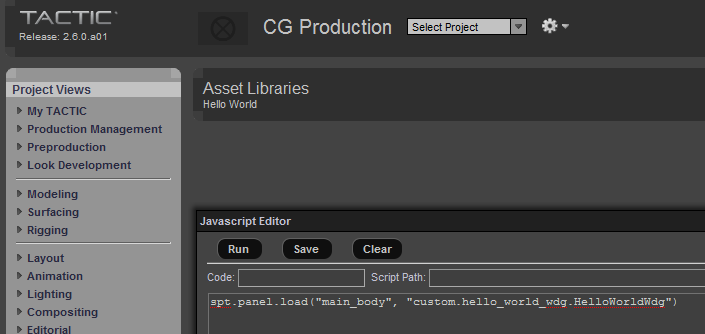
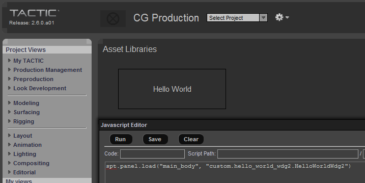
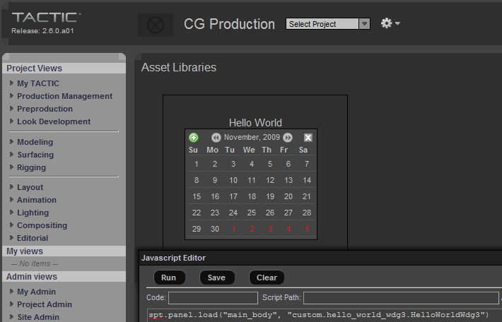
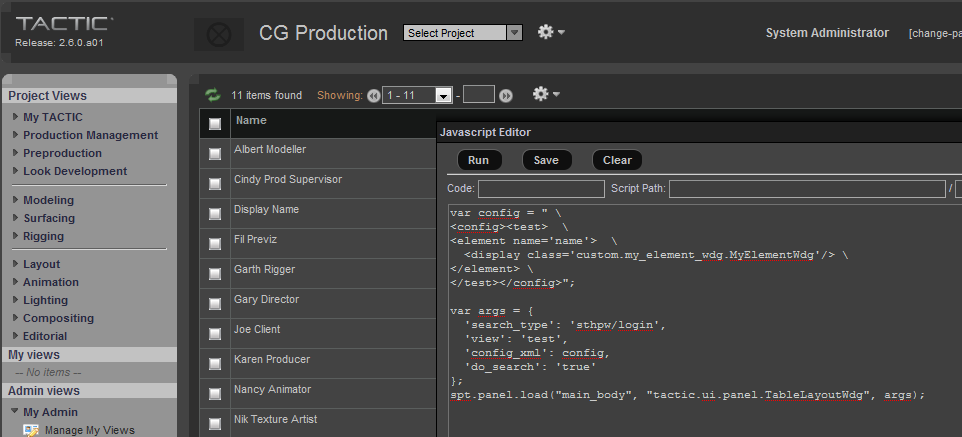
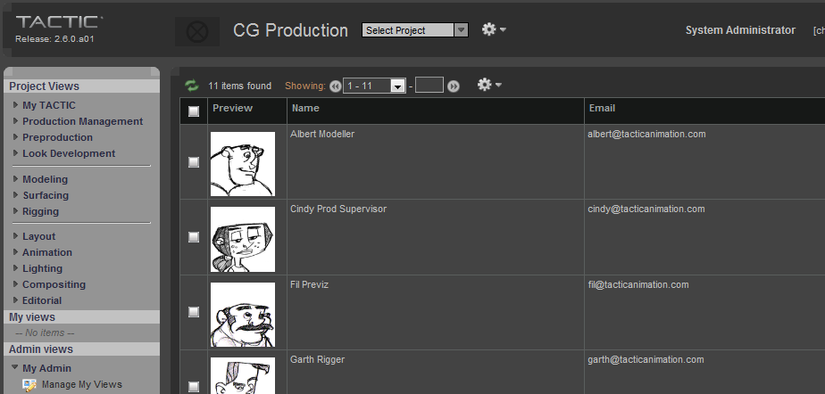
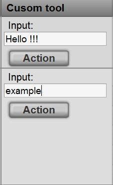

Widget Development
As of 2.5, all widgets are derived from BaseRefreshWdg. This refresh widget is a new style widget which has some added functionality allowing to to be "smart" enough to refresh itself. It also standardizes the interface for passing construction parameters to the widget. All new style widgets take kwargs (keyword arguments) as argumets to the constructor
widget = MyWidget(option1=value1, option2=value2)All new style widgets defined a method called "get_args_keys", which return a dictionary of defined and allowable arguments:
def get_args_keys(my):
return {
"option1": "this is option #1",
"option2": "this is option #2"
}TACTIC provides the ability to create your own widgets and integrate them seamlessly into the TACTIC interface.
There are 3 main types of widgets:
*Widget:*A widget derived from a the base Widget class is a free standing widget that requires no parent widget.
*Table Element Widget:*An element widget is a widget that needs expected to be put inside a TableLayoutWdg.
*Input Widget:*An input widget is a widget that requires one or more values to put entered or extracted.
Create your own custom widget
You can create your own custom widgets in Tactic that become completely integrated in the user interface.
All widgets are derived from the base Widget (pyasm.web.Widget) class. This class defines the fundamental functionality required for all widgets that appear in TACTIC. To create your own widget, you can derive off of this class.
Hello World
In order to start showing how custom widgets can be created, we will start with the base "Hello World" widget. Create a folder called "custom" and then create a new file called "hello_world_wdg.py" in this new folder. In the file add the following lines:
from pyasm web import Widget
class HelloWorldWdg(Widget):
def get_display(my):
return "Hello World"In order for TACTIC to be able to use this class,TACTIC must be able to see this file: this "custom" folder must be either in the PYTHONPATH or in sys.path of the TACTIC process (you can alternatively, use any class that complies with Python’s module handling.
Note
You can also use the python_path variable in the TACTIC config file to add paths to the sys.path dictionary
In order to view this widget quickly, you can open up the javascript editory and type:
spt.panel.load("custom.hello_world_wdg.HelloWorldWdg");and press the "Run" button. You should see the following:

Note that the title does not change. This is something that the link will do automatically.
Formatting the Widget
We could format the widge a litlle more using some basic HTML widgets.
from pyasm.web import Widget, DivWdg
class HelloWorldWdg2(Widget):
def get_display(my):
top = DivWdg()
top.add_style("font-size: 15px")
top.add_style("margin: 30px")
top.add_style("padding: 30px")
top.add_style("width: 150px")
top.add_style("text-align: center")
top.add_style("border: solid 1px black")
top.add("Hello World")
return topAdding this to a file called hello_world_wdg2.py and then in javascript editor, type:
spt.panel.load("custom.hello_world_wdg2.HelloWorldWdg2");Pressing the "Run" button gives:

HTML
Here we introduce the basic HTML widget DivWdg. The add_style() allows you to add arbitrary CSS styles to the widget. There are various operations that can be added to HTML widgets that are useful for formatting the layout of the page. These methods include:
-
set_attr(name, value)
-
add_style(name, value)
-
add_class(css_class)
-
add_event(event, js_action)
There are few useful predefined widgets that sit on top of HtmlElement:
-
DivWdg
-
SpanWdg
-
Table
These are all based of of HtmlElement which are basic html elements and provide a thin layer above HTML. HtmlElement also defines a number of static constructors to address most HTML elements:
-
HtmlElement.br()
-
HtmlElement.p()
-
HtmlElement.br()
These return variations of HtmlElement that represent the different HTML elements. These are useful for laying out a complex widget. All HTML elements and their properties are accessible from these.
Using other widgets
You can add other predefined widget, for example, the CalendarWdg
from pyasm.web import Widget, DivWdg
from tactic.ui.widget import CalendarWdg
class HelloWorldWdg3(Widget):
def get_display(my):
top = DivWdg()
top.add_style("font-size: 15px")
top.add_style("margin: 30px")
top.add_style("padding: 30px")
top.add_style("width: 200px")
top.add_style("text-align: center")
top.add_style("border: solid 1px black")
top.add("Hello World")
calendar = CalendarWdg()
top.add(calendar)
return topAdding this to a file called hello_world_wdg3.py and then in javascript editor, type:
spt.panel.load("custom.hello_world_wdg3.HelloWorldWdg3");Pressing the "Run" button gives:

This adds one of the predefined widget "CalendarWdg". Widgets are hierarchical and can be added to other widgets. Any widget can embed any other widget within it’s display. This provides a very flexible archictecure for building up complex hierarchical widgets.
Create your own table element widget
There is a special class of widgets that are designed to be used in conjuntion with TableLayoutWdg, the primary widget used for laying out tabular data. These widgets should be derived from BaseTableElementWdg, which extends the basic Widget class with a number of specific methods.
The TableLayoutWdg uses it’s child widgets slightly differently than most widgets. It creates a single widget for each column and calls the get_display() method repeatedly for each row; each row representing a single sobject. Each element widgets does have knowledge of all of the sobjects, however, for each row, there will be a current sobject set. This means that the widgets get_display() method will be called repeatedly for each row. So, instead of operating on a list of widgets, the table element widget should get the current widget using the "get_current_widget()" method.
The following is a simple example of a table element widget.
from pyasm.web import DivWdg
from tactic.ui.common import BaseTableElementWdg
class MyElementWdg(BaseTableElementWdg):
def get_display(my):
sobject = my.get_current_sobject()
first_name = sobject.get_value("first_name")
last_name = sobject.get_value("last_name")
div = DivWdg()
div.add("%s %s" % (first_name, last_name) )
return divThe class is almost identical to a regular class, except that it is derived from BaseTableElementWdg and that it uses get_current_sobject() to get the current sobject being drawn. This widget still has access to all of the sobjects in all of the rows, through get_sobjects(), if this is necessary.
To test this, save the code above in a file called my_element_wdg.py and enter this into the javascript editor:
Note
This only works in 2.6: in 2.5, you have to create the view in the widget config table
var config = " \
<config><test> \
<element name='name'> \
<display class='custom.my_element_wdg.MyElementWdg'/> \
</element> \
</test></config>";
var args = {
'search_type': 'sthpw/login',
'view': 'test',
'config_xml': config,
'do_search': 'true'
};
spt.panel.load("main_body", "tactic.ui.panel.TableLayoutWdg", args);Pressing the "Run" button gives:

Your custom table element widget completely integrates within the TACTIC interface. You can add other widgets by expanding the config definition.
var config = " \
<config><test> \
<element name='preview'/> \
<element name='name'> \
<display class='custom.my_element_wdg.MyElementWdg'/> \
</element> \
<element name='email'/> \
</test></config>";
var args = {
'search_type': 'sthpw/login',
'view': 'test',
'config_xml': config,
'do_search': 'true'
};
spt.panel.load("main_body", "tactic.ui.panel.TableLayoutWdg", args);This adds a preview and an email column (which are predefined for sthpw/login search type) and appear with your custom widget.

BaseTableElementWdg
This example describes how to create your own BaseTableElementWdg to execute a server-side command. The user can type some words in the text field, and then click on the "Action" button. The words will be written as the content of a file in the /tmp folder of the server. In the tactic config file, tactic_linux-conf.xml, let’s say the python_path is /home/apache/custom. You can create a file called custom_wdg.py and init.py in it.

Here is the content ofinit.py:
from custom_wdg import *Here is the content of custom_wdg.py:
__all__ = ['CustomToolElementWdg','CustomCmd']
from tactic.ui.common import BaseTableElementWdg
from tactic.ui.widget import ActionButtonWdg
from pyasm.web import HtmlElement, SpanWdg
from pyasm.widget import TextWdg
from pyasm.command import Command
class CustomToolElementWdg(BaseTableElementWdg):
def get_display(my):
top = DivWdg()
top.add_class('spt_custom_tool_top')
text = TextWdg('user_input')
action_button = ActionButtonWdg(title='Action', tip='Write a file in /tmp based on the data in the text field')
action_button.add_behavior({'type':'click_up',
'cbjs_action': '''var server = TacticServerStub.get();
try {
var top = bvr.src_el.getParent(".spt_custom_tool_top");
var values = spt.api.get_input_values(top, null, false);
# this path is assumed importable in your Python environment
server.execute_cmd('custom_wdg.CustomCmd', values);
}
catch(e) {
alert(spt.exception.handler(e));
}
'''})
top.add(SpanWdg('Input:', css='small'))
top.add(text)
top.add(HtmlElement.br())
top.add(action_button)
return top
class CustomCmd(Command):
def execute(my):
text = my.kwargs.get('user_input')
f = open('/tmp/my_file.txt','w')
f.write(text)
f.close()If you click the first "Action" button, a file with "Hello !!!" will be created. On clicking the second "Action" button, the file content will be replaced with the word "example".